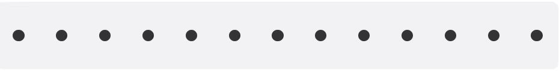
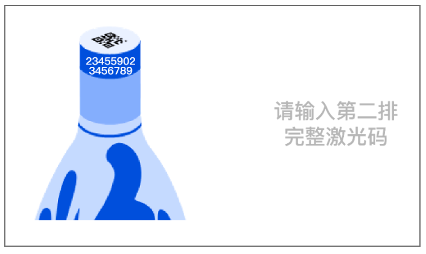
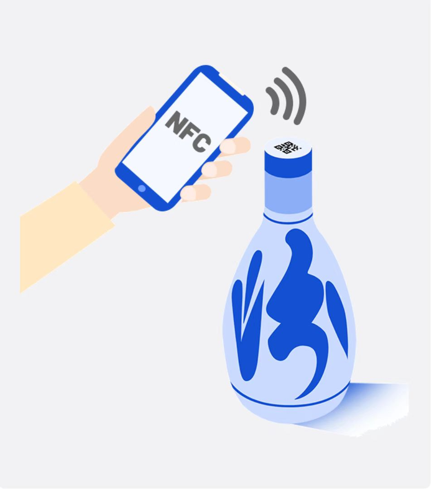
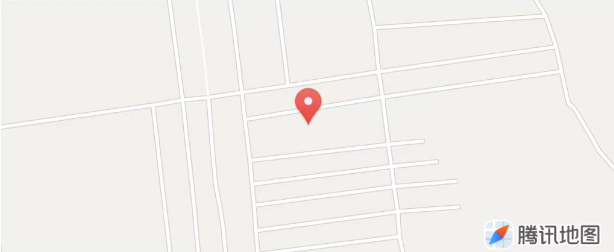
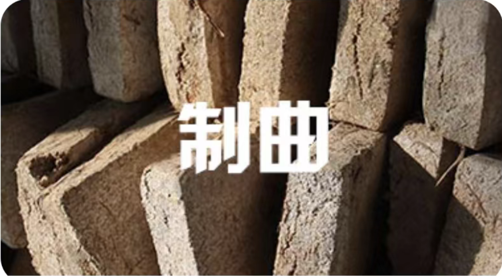
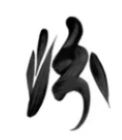

企业信息
工艺流程
查验记录
售后反馈
消费者红包

请输入完整的激光码
防伪验证案例

请贴近验证设备

苹果手机暂不支持NFC查验.
山西杏花村汾酒厂股份有限公司(以下简称“山西汾酒”或“公司”)位于山西省汾阳市杏花村,前身杏花村汾酒厂成立于1949年6月。1993年12月,公司经批准改制为股份有限公司,1994年1月在上海证券交易所上市,为山西省第一家上市公司,同时也是中国白酒行业第一股。
公司占地4000余亩,拥有职工7500余人,总资产64余亿元,注册资本86584.83万元,是全国最大的名白酒生产基地之一。公司主营汾酒、竹叶青酒及其系列酒的生产、销售;酒类高新技术及产品研究、开发、生产、应用;投资办企及相关咨询服务;具有饮料酒生产能力4万余吨,2012销售收入达64.78亿元。公司主导产品汾酒、竹叶青酒系列,有1500年的文字记载历史,在国内外享有较高的知名度、美誉度和忠诚度。
公司所在地山西省杏花村具有得天独厚的酿酒自然条件,拥有丰富清洁的地下水源,拥有独特的区域小气候和上千年培育的微生物体系,周边至少5公里内禁止兴建有污染的企业,是驰名中外的传统历史名酒原产地。
精心:专心、周密、细心
精细:工作做细,管理做细,流程管细
精益:求效率、求质量、求品质
1.汾酒集团指导思想:创建和谐,凝聚力量,奋起直追,再铸辉煌。
2.汾酒集团三步走赶超战略:追赶、超越、领先。
3.汾酒集团战略定位:国酒之源、清香之祖、文化之根。
4.汾酒集团经营理念:清香汾酒、文化汾酒、绿色汾酒。
5.汾酒集团2010年经营方针:夯实基础、创新管理、深度营销、加速发展。
6.汾酒集团七大支撑:制度支撑市场支撑文化支撑人才支撑质量支撑资金支撑项目支撑
7.不断超越自我和永不满足,是职业生涯持久原动力。
8.态度决定行为,行为培养性格,性格决定命运。
9.用文化凝聚人心,用制度驾驭人性,用品牌成就人生。



欢迎您使用本应用。在您使用本应用提供的各项服务之前，请务必仔细阅读并透彻理解本《用户协议》（以下简称“本协议”）。
尊敬的顾客，您好！值此3.15国际消费者权益日来临之际，为了给您提供更优质的产品与服务，我们诚挚邀请您抽出2分钟时间参与本次匿名调研：